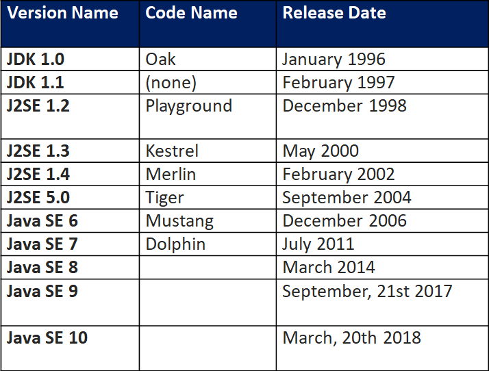
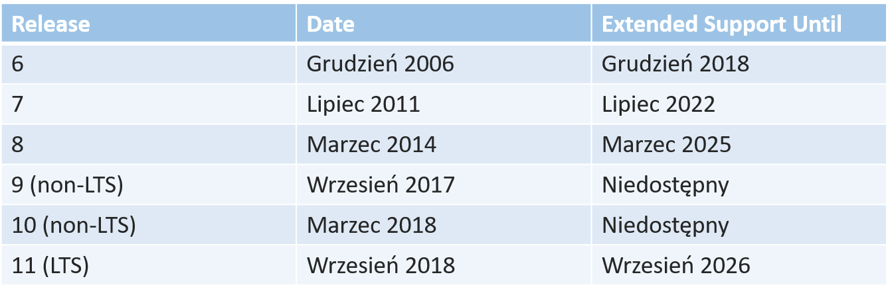
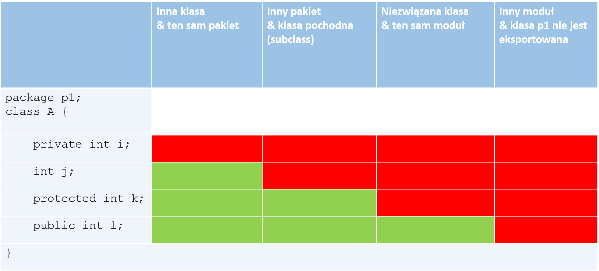
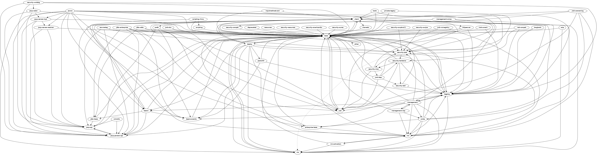
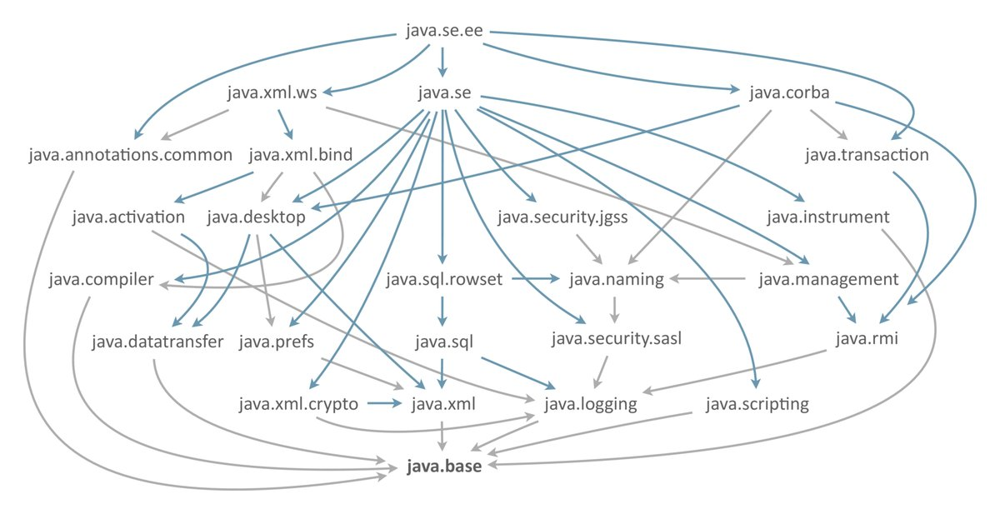
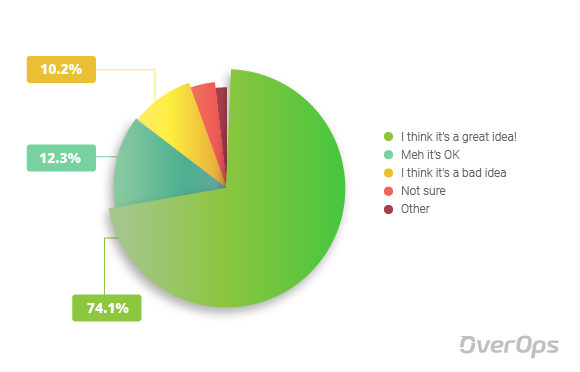
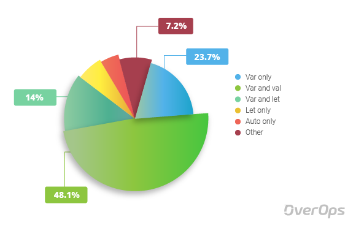

Created by Piotr Hendzel
Java Community Process & JCP Executive Committee


Sposób organizacji kodu
Moduły dodają nowy poziom grupowania do języka:

---another-module
| |
| \---src
| | module-info.java
| |
| \---com
| \---phendzel
| \---home
| AnotherTest.java
|
\---first-module
|
\---src
| module-info.java
|
\---com
\---phendzel
+---remote
| NewAnotherTest.java
|
\---work
Test.java
module first.module {
exports com.phendzel.work;
exports com.phendzel.remote;
}
module another.module {
requires first.module;
}
Oficjalną rekomendacją jest używanie odwrotnych nazw DNS.
JDK
Java 7

Java 9

public interface ReportGeneratorJava8 {
void generateReport(String reportData, String schema);
default String getReportData(String reportSource) throws Exception {
String reportData = null;
if (null == reportSource) {
throw new Exception("reportSource can't be null....");
}
if (reportSource.equalsIgnoreCase("DB")) {
System.out.println("Reading the data from DB ....");
//logic to get the data from DB
reportData = "data from DB";
} else if (reportSource.equalsIgnoreCase("File")) {
System.out.println("Reading the data from FileSystem ....");
//logic to get the data from File
reportData = "data from File";
} else if (reportSource.equalsIgnoreCase("Cache")) {
System.out.println("Reading the data from Cache ....");
//logic to get the data from Cache
reportData = "data from Cache";
}
System.out.println("Formatting the data to create a common standard");
return reportData;
}
}
public interface ReportGeneratorJava9 {
void generateReport(String reportData, String schema);
private String getReportDataFromDB() {
System.out.println("Reading the data from DB ....");
//logic to get the data from DB
String reportData = "data from DB";
return formatData(reportData);
}
private String getReportDataFromFile() {
System.out.println("Reading the data from FileSystem ....");
//logic to get the data from File
String reportData = "data from File";
return formatData(reportData);
}
private String getReportDataFromCache() {
System.out.println("Reading the data from Cache ....");
//logic to get the data from Cach
String reportData = "data from Cache";
return formatData(reportData);
}
private String formatData(String reportData) {
System.out.println("Formatting the data to create a common standard");
//logic to format the data
return reportData;
}
default String getReportData(String reportSource) throws Exception {
String reportData = null;
if (null == reportSource) {
throw new Exception("reportSource can't be null....");
}
if (reportSource.equalsIgnoreCase("DB")) {
reportData = getReportDataFromDB();
} else if (reportSource.equalsIgnoreCase("File")) {
reportData = getReportDataFromFile();
} else if (reportSource.equalsIgnoreCase("Cache")) {
reportData = getReportDataFromCache();
}
return reportData;
}
}
< Java 9
List< String > emptyList = new ArrayList<>();
List< String > immutableList = Collections.unmodifiableList(emptyList);
Java 9
List immutableList = List.of();
List immutableList = List.of("one","two","three");
< Java 9
Set< String > emptySet = new HashSet<>();
Set< String > immutableSet = Collections.unmodifiableSet(emptySet);
Java 9
Set< String > immutableSet = Set.of();
Set< String > immutableSet = Set.of("one","two","three");
< Java 9
Map< Integer,String > nonemptyMap = new HashMap<>();
nonemptyMap.put(1,"one");
nonemptyMap.put(2,"two");
nonemptyMap.put(3,"three");
Map< Integer,String > immutableNonEmptyMap = Collections.unmodifiableMap(nonemptyMap);
Java 9
Map emptyImmutableMap = Map.of();
Map nonemptyImmutableMap = Map.of(1, "one", 2, "two", 3, "three");
String greeting = "Hello world";
ArrayList< String > messages = new ArrayList<>();
HashMap< HashSet< String>, ArrayList< String>> map = new HashMap<>();
var greeting = "Hello world";
var messages = new ArrayList<>();
var map = new HashMap<>();


Piotr Hendzel
Java Developer
https://twitter.com/PhendzelDev
phendzel.dev@gmail.com